项目总览
产品一句话
一个在桌面角落持续运转的冬日钓鱼摆件，玩家不需要高频操作，只需要偶尔打开鱼篓、升级装备、查看图鉴和领取成长反馈。
当前性质
运行时是纯 2D：`Node2D` 主场景、`CanvasLayer` HUD、PNG 图层、Canvas 绘制和 2D shader。美术目标是手绘微写实，不是三渲二管线。
核心玩法
抛竿
进入等待状态，播放轻柔抛竿声和浮漂入水声。
等待
鱼竿等级越高，等待时间越短；鱼篓满时自动暂停。
咬钩
浮漂下沉、涟漪触发，播放 bite 提示音。
上鱼
按鱼竿、鱼饵和权重抽取鱼种、重量、星级品相。
结算
进入鱼篓、更新图鉴纪录、触发成就、可卖出换金币。
鱼篓
展示最近捕获、库存容量、单条出售、批量出售和锁定保留。收鱼郎出现时，卖鱼收益提升至 1.5 倍。
图鉴
按稀有度展示 60 种鱼。已发现鱼记录捕获次数、最大体重，并解锁长期徽章：集齐 10 条、巨物、完美★★★。稀有变体（斑斓/鎏金/七彩，6%/1.2%/0.2%，价值 ×2/5/12）按种记录，60×3=180 格收集轴。未发现鱼保持隐藏剪影；缺图标回退按品阶通用鱼图标。
每日订单
每日 1 单，4 种类型：指定鱼种 / 指定品阶（≥某档）/ 大物（≥某重量）/ 完美品质★★★。交付未上锁的符合渔获获 2.5 倍奖励，进度常驻 HUD，跨日刷新。
鱼篓整理
排序（最新 / 价值 / 品阶 / 重量）与「订单鱼」筛选；收藏锁保留心爱渔获不被批量卖出或订单交付。
陈列 / 装饰
把心爱渔获摆上「陈列架」（5 槽，可取下），离开鱼篓永久展示；每件 +1% 全局卖价、封顶 +5%。最契合桌面摆件的健康非数值长线 + 收集深度，也是未来外观变现的落点。
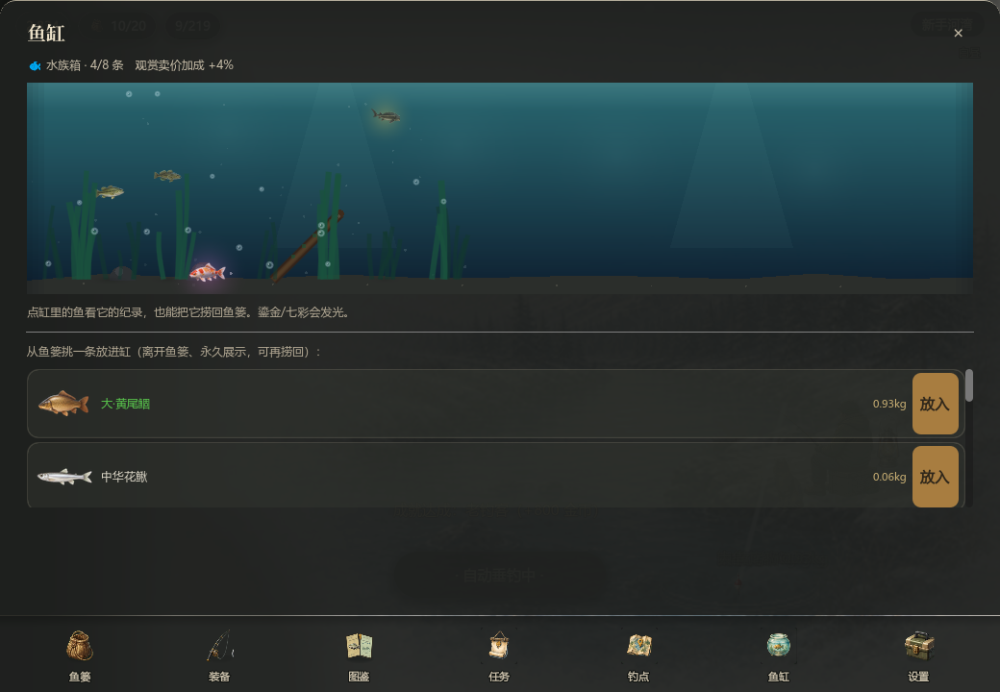
docs/img/panel_decor.png
鱼篓 → 陈列页签：陈列架槽位（取下）+ 从鱼篓上架列表，7 页签布局。
多钓点生态
从“单钓点挂机”升级为“多钓点生态挂机”。每个钓点用生态标签圈定鱼池，带专属随机事件、解锁条件与常驻手感系数。骨架数据化（spot_data.gd / event_data.gd），新增钓点只需加数据 + 一张背景图。
新手河湾 · river_bend
默认解锁。保留原版体验——原 28 种鱼全数仍在此出没。事件：鱼汛 / 顺水鱼群 / 晨雾 / 漂流木箱。
静水湖泊 · still_lake
累计钓到 80 条解锁。偏鲈、鳜、黑鱼、狗鱼、大口黑鲈、鳡、鲟与欧鲶。事件：晨雾 / 寒潮 / 顺水鱼群。
海岸码头 · coast_pier
累计钓到 300 条解锁。偏海鲈、真鲷、黑鲷、带鱼、石斑、马鲛、黄鱼、金枪、旗鱼。事件：涨潮 / 漂流木箱 / 保护鱼放流。
随机事件（数据驱动 · 低干扰）
| 事件 | 类型 | 效果 | 钓点 |
|---|---|---|---|
| 鱼汛 | buff | 咬钩×0.5、运气+7 | 全部 |
| 晨雾 | buff | 咬钩×1.12、价值×1.12 | 河湾 / 湖泊 |
| 寒潮 | buff | 咬钩×1.45、价值×1.28 | 湖泊 |
| 顺水鱼群 | buff | 咬钩×0.7、运气+3 | 河湾 / 湖泊 |
| 涨潮 | buff | 咬钩×0.6、价值×1.1、运气+4 | 海岸 |
| 漂流木箱 | 即时 | 一次性金币 | 河湾 / 海岸 |
| 保护鱼放流 | 即时 | 保育金币奖励 | 河湾 / 海岸 |
切换与解锁
- 鱼篓面板新增「钓点」页签：各钓点名/描述/解锁状态/鱼种收集进度/当前事件 + 前往按钮。
- HUD 金币行上方常驻「钓点名 · 事件」角标（如“静水湖泊 · 晨雾”），点开钓点页。
- 切换钓点即时改变鱼池、随机事件、背景与每日订单建议。
- 抽鱼严格限定当前钓点鱼池；某品阶在池内缺鱼时就近降/升阶，绝不逸出到别的钓点。
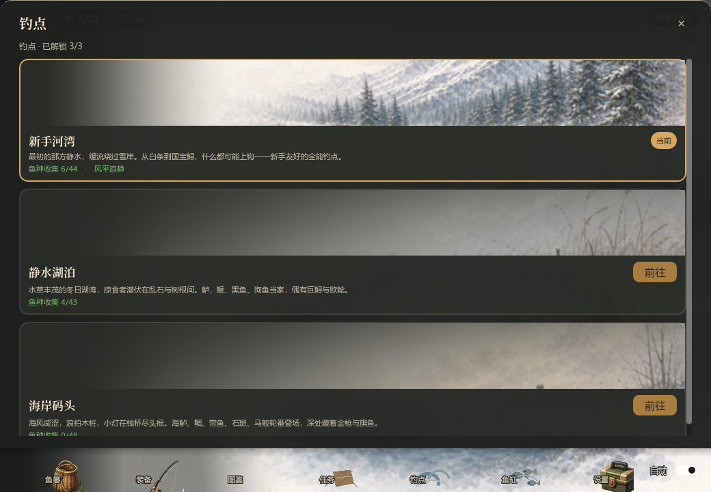
docs/img/panel_spot.png
鱼篓 → 钓点页签：三钓点解锁状态、鱼种收集进度与前往切换。
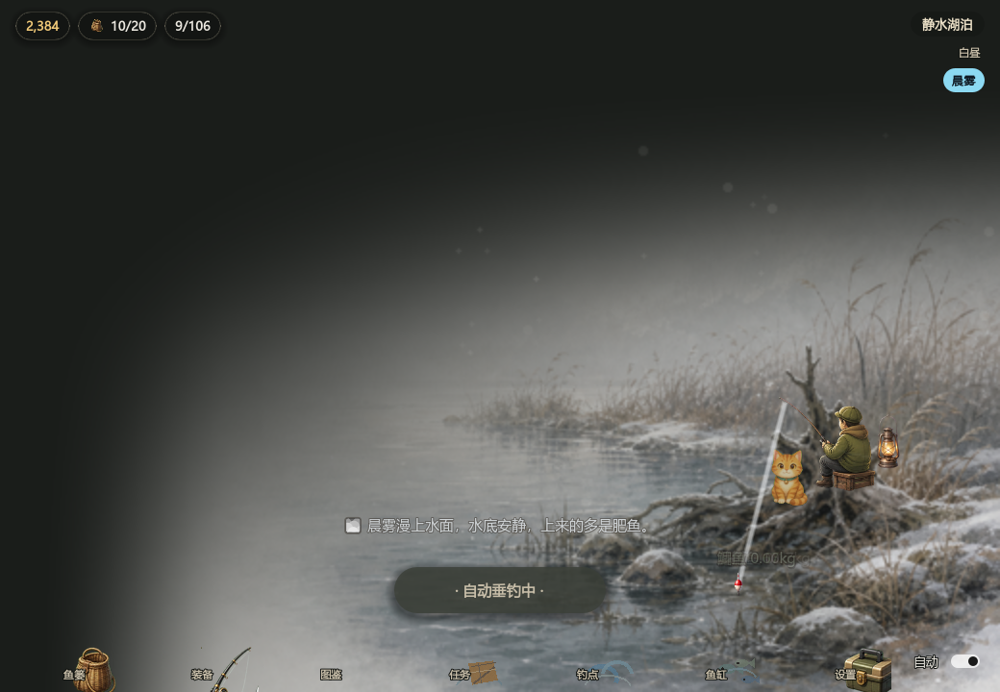
docs/img/scene_lake.png
切到静水湖泊：HUD 角标“静水湖泊 · 晨雾”。（钓点背景图为 Codex 待产资源，缺图回退现有主图。）
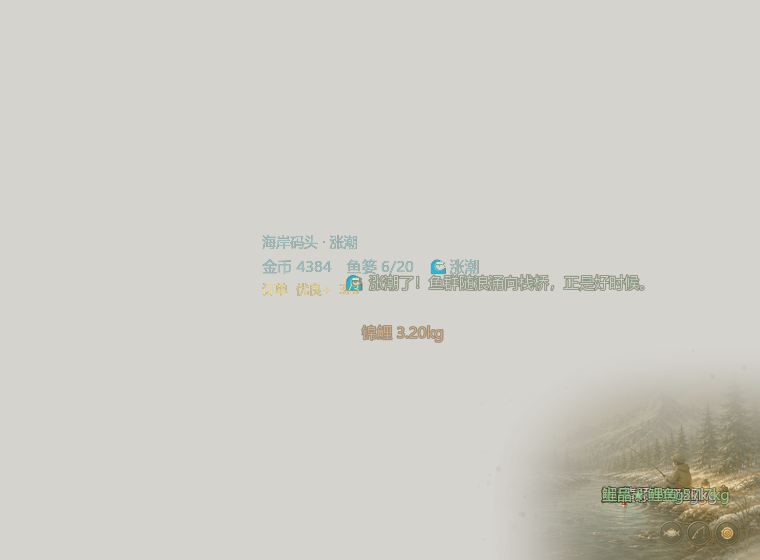
docs/img/scene_coast.png
切到海岸码头：HUD 角标“海岸码头 · 涨潮”。
经济与成长
成长系统
| 系统 | 当前规则 |
|---|---|
| 鱼竿 | 费用 `200 * 2.0^(等级-1)`（陡曲线，成为长期金币去向）；缩短等待，提高高阶鱼权重，鱼价每级 +8%。 |
| 鱼饵 | 4 档永久升级：蚯蚓、红虫、活虾、秘制饵。提高上品、极品、完美星级通过率。 |
| 鱼篓 | 容量从 20 到 55，升级费用为 100、250、600、1500、4000、10000、25000。 |
| 离线收益 | 最多结算 8 小时，效率 50%，受鱼篓剩余空间限制。 |
鱼类稀有度
| 档位 | 数量 | 基础权重 | 价值跨度 |
|---|---|---|---|
| 普通 | 12 | 58.0 | 1 - 18 金币 |
| 优良 | 13 | 25.0 | 14 - 55 金币 |
| 稀有 | 12 | 11.0 | 55 - 190 金币 |
| 史诗 | 13 | 4.5 | 200 - 580 金币 |
| 传说 | 7 | 1.3 | 750 - 2200 金币 |
| 神话 | 3 | 0.2 | 4500 - 11000 金币 |
品相与个体
每条鱼会抽重量、价值和星级品相。星级倍率为 1.0、1.8、4.0、8.0；同种鱼中大个体会标记“大”，顶级个体会标记“巨物”。这些规则给挂机收益制造长期波动，也让图鉴纪录有追求空间。
美术资源
美术方向
柔和冬日、微写实手绘、低饱和水彩质感。主体集中在右下角，左上透明羽化融入桌面；避免像普通矩形游戏窗口。
运行时资源规模
- 背景：主场景 520 x 400 alpha PNG；钓点底图（湖泊/海岸）为 Codex 待产，缺图回退主图。
- 鱼类运行时图标 28 张（原版），32 个新鱼缺图时回退按品阶通用鱼图标（程序化，不崩）。
- 事件图标 5 个（鱼汛/雾/涨潮/木箱/放流）为 Codex 待产（见 art_requests P0）。
- 角色 3 帧，道具 4 张，装备 8 张。
- 水光 6 帧、雾 3 帧、雪 3 帧、涟漪 4 帧、灯光 4 帧。

docs/img/art_asset_contact_sheet.png
当前运行时美术资源总览，用于快速检查风格一致性、透明边缘和资源覆盖。

assets/art/background/corner_scene_winter_base.png
Godot 接入用主场景图，负责窗口边缘融合和第一视觉。
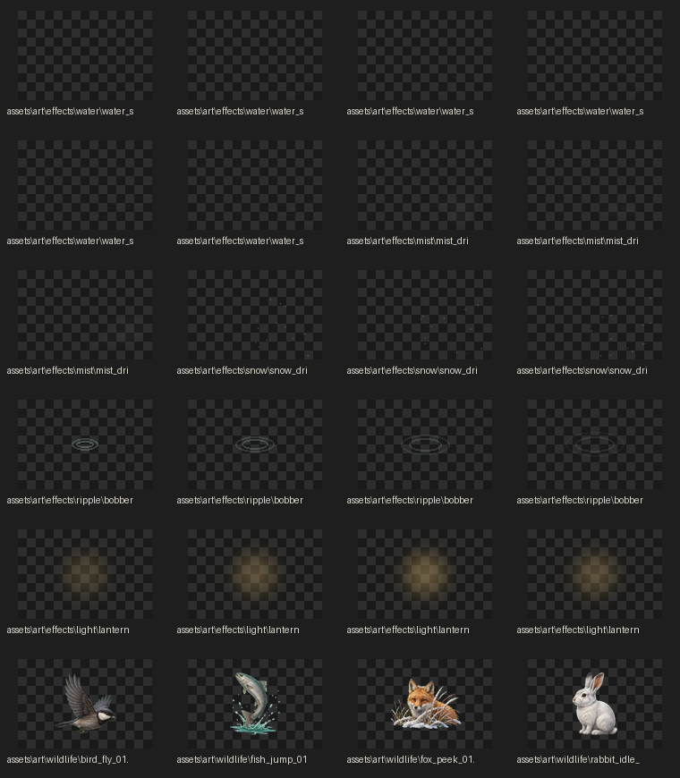
docs/img/dynamic_asset_contact_sheet.png
水光、雾气、雪粒、涟漪、灯光和小动物事件资源。
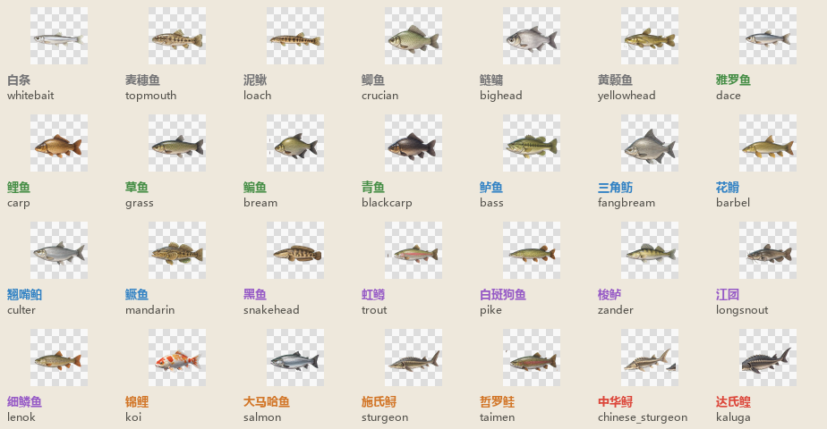
docs/img/fish_icon_contact_sheet.png
与 `FishData.FISH` 对齐的鱼类图标总览。

character/fisher_idle.png待机主角色。

props/rod.png钓竿道具。

props/bobber_idle.png浮漂待机。
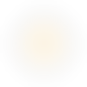
effects/light/*灯光脉冲。
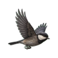
wildlife/*偶发小动物。

ui/ui_button_fish.png角落入口按钮。
鱼类样张
以下为运行时鱼类图标抽样，完整清单见 `assets/art/fish/fish_art_manifest.json`。


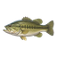

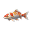

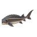
音频资源
音频定位
声音服务于“低打扰桌面伴侣”：短促、轻柔、低音量、避免强提示音。环境水声默认循环，SFX 用播放器池播放，并带冷却避免连续触发造成刺耳堆叠。
混音默认值
- 主音量：0.80
- 音效音量：0.85
- 环境音量：0.42
- SFX 播放器池：8 个
- 音量和静音状态保存至 `user://audio_settings.json`
运行时音频清单
| ID | 类型 | 时长 | 用途 |
|---|---|---|---|
ui_click | UI | 0.10s | 按钮点击。 |
ui_error | UI | 0.11s | 金币不足或无效操作。 |
cast | Fishing | 0.397s | 抛竿/线组轻响。 |
bobber_splash | Fishing | 0.36s | 浮漂入水。 |
bite | Fishing | 0.36s | 咬钩提示。 |
catch_common | Fishing | 0.457s | 普通捕获。 |
catch_rare | Fishing | 1.381s | 稀有或高品相捕获。 |
coin | Economy | 0.241s | 出售、订单、成就金币反馈。 |
upgrade | Economy | 0.29s | 鱼竿、鱼饵、鱼篓升级。 |
ambience_water_loop | Ambience | 28.0s | 柔和循环水声。 |
技术结构
窗口与交互
窗口目标尺寸 760 x 560，主美术区域 520 x 400 偏移到右下。透明区域鼠标穿透，仅可见场景和按钮参与交互。
场景渲染
`main.tscn` 使用 `Node2D` + `ScenePainter` + `CanvasLayer`。`scene_painter.gd` 负责背景、雾雪、水光、浮漂、涟漪、灯光和偶发 wildlife 绘制。
数据
`fish_data.gd`（60 鱼/生态标签/按钓点鱼池抽取）、`spot_data.gd`（钓点）、`event_data.gd`（随机事件）、`achievements.gd`（成就）均为 `class_name` 纯数据，逻辑与数据解耦，便于扩展。
存档（v10）
路径 `user://corner_fishing_save.json`，原子写 + .bak 回退。保存金币、装备、库存、图鉴、累计、订单、窗口位置；v8 多钓点、v9 陈列架、v10 稀有变体（inv/dex var/vmask + best_var）。旧档逐版兼容迁移，默认落点 river_bend、陈列空、变体普通。
验证工具
`tools/validate_game.gd` 用于无头数据和经济验证；`tools/dev_screenshot.gd` 用于引擎内截图和透明窗口检查。
资源入口
美术 manifest 位于 `assets/art/fish/` 与 `assets/art/equipment/`，音频 manifest 位于 `assets/audio/audio_manifest.json`。
测试 · 数据来源 · 回退
测试结果（多钓点扩展后）
godot --headless -s tools/validate_game.gd→ 0 失败（含：钓点/事件数据、三钓点鱼池隔离、随机事件、多钓点切换、陈列/装饰、存档 v2/v8/v9 往返与旧档迁移、鱼图标回退，及原有全部回归段）。godot --headless -s tools/balance_probe.gd→ 经济健康：鱼竿回本 0.3→7.1 分递增、鱼饵 4~17 分、鱼钩 5~46 分，全裸→全满约 ×20。扩鱼后各档期望仅微动。godot --path . -s tools/dev_screenshot.gd→ 截图含 panel_spot / scene_lake / scene_coast，UI 无溢出。
缺资源回退（不阻塞、不崩）
- 钓点背景缺图 → 回退现有主场景图（
scene_painter.set_spot）。 - 鱼专属图标缺图 → 回退按品阶通用鱼图标（程序化小鱼剪影）。
- 事件图标缺图 → 不显示图标，文案/HUD 角标正常。
- 旧存档无多钓点字段 → 默认 river_bend，仅解锁默认钓点。
选鱼 / 钓点 数据来源
详见 docs/spot-research-20260614.md。主要参考：
FishBase /
GBIF（FishBase 数据集）（生境/体重）、
Eschmeyer's Catalog of Fishes（分类学权威）、
IGFA World Records（运动钓目标鱼/体重上限）、
Fishbrain 与
Pier Fishing 社区（常钓鱼种/钓点偏好）、
中文垂钓资料（中国钓鱼人网、
钓鱼人）补本土鱼种与习性。
回退到多钓点基线
本轮扩展前已打 tag。如需回退：git reset --hard 多钓点基线-20260614。存档向后兼容，回退代码不动存档。
总体看板
| 模块 | 当前状态 | 下一步建议 |
|---|---|---|
| 核心挂机循环 | 已实现 | 继续调等待节奏、咬钩反馈和鱼篓满时提示。 |
| 鱼类与经济 | 已实现 | 60 鱼/生态标签已上线；用长时模拟检查各钓点高阶鱼、订单和收鱼郎对通胀的影响。 |
| 多钓点生态 | 已实现 | 3 钓点 + 7 事件 + 存档 v8 已上线；下一步加山涧溪流 / 远海深钓（数据骨架已就位）。 |
| 陈列 / 装饰 | 已实现 | 陈列架 5 槽 + 卖价加成 + 存档 v9 已上线；下一步把陈列鱼渲染成桌面小景（待美术）、更多陈列形态。 |
| 图鉴/成就 | 已实现 | 图鉴扩到 60 种；补齐更明确的奖励节奏和未发现鱼剪影表现。 |
| 美术资源 | 已接入 | 继续拆分前景/角色/水面层，减少整图依赖，提升局部动画空间。 |
| 音频资源 | 已接入 | 实机调混音，重点检查长时间挂机时环境音疲劳度。 |
| 打包发行 | 待推进 | 准备 Windows 导出、透明窗口兼容性测试、itch.io/Steam 页面素材。 |